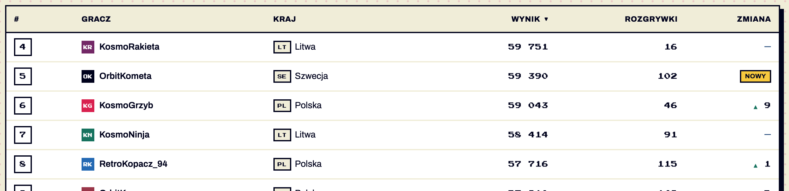
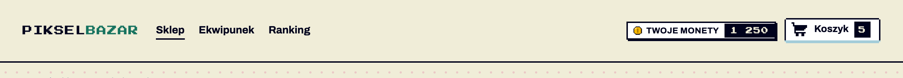
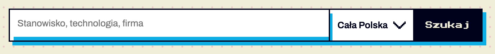
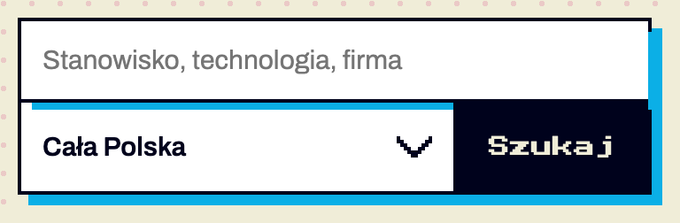
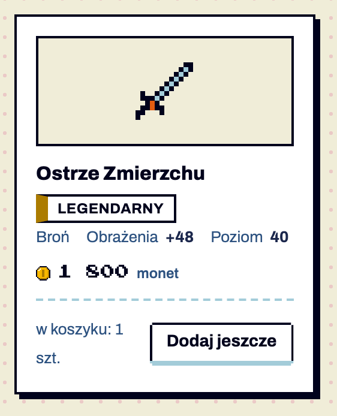

Ostrze Zmierzchu
Legendarny1 800monet
Agenci budujący ekrany w iteracji 2 (sklep, ranking, migracja strony KodRekrut) wymyślili cztery elementy, których nie ma w systemie. Każdy jest w rejestrze components.json jako draft. Po lewej: jak wyglądają dziś w wyniku testu. Po prawej: wersja przyjęta do systemu.
Właściciel: Konrad Kosiorek. Style są w components.css, statusy w components.json, specyfikacja w design.md §6.6, §6.11 i §6.24.
| # | Kandydat | Gdzie wystąpił | Rekomendacja | Status po decyzji |
|---|---|---|---|---|
| 1 | Kod kraju .cc | ranking — iteracja 1 i 2, niezależnie | Przyjąć jako nowy komponent | testowy |
| 2 | Portfel w nagłówku | sklep — iteracja 1 i 2 | Nie dodawać klasy; opisać jako wzorzec z .badge-seg | wzorzec |
| 3 | Wyszukiwarka z listą miast | migracja KodRekrut | Przyjąć jako wariant .search-main + poprawić błąd cienia | testowy |
| 4 | Pionowa karta produktu | sklep — 12 kart | Przyjąć jako modyfikator .card-vertical + .card-art | testowy |
Ranking graczy, kolumna „Kraj”. Agent sam zastąpił emoji flag dwuliterowym kodem — w obu iteracjach testu, bez podpowiedzi.
Dziś w wyniku testu

Przyjęte
| Gracz | Kraj | Wynik |
|---|---|---|
| KosmoGrzyb | Polska | 59 043 |
| OrbitKometa | Szwecja | 59 390 |
| KosmoRakieta | Litwa | 59 751 |
--paper, kod ISO 3166-1 alfa-2 w --font-pixel 7 px, min. 28 × 20 px.aria-hidden="true".Sklep z przedmiotami: saldo monet obok koszyka. Agent dodał klasę .wallet, ale zbudował ją z istniejących części — .badge.badge-seg i .sprite.s-coin.
Dziś w wyniku testu

Przyjęte — bez nowej klasy
Twoje monety1 250
Kryształy48
.badge.badge-seg → lewa część: sprite waluty + nazwa, prawa: saldo w --font-pixel.aria-live="polite", bo zmienia się po zakupie.Migracja strony KodRekrut: stary formularz miał pole „Miasto”, a migracja nie może zmieniać pól wysyłanych do serwera. Agent wstawił <select> w .search-main.
Dziś w wyniku testu


Przyjęte
.search-main → input + .select > select + button. Lista oddzielona lewą ramką 2 px, bez własnego cienia.components.css linia 109 nadaje polu własny cień (.search-main input { box-shadow: 6px 6px 0 … }). Przy samym przycisku jest prawie niewidoczny, przy liście tworzy podwójny, schodkowy cień (lewy zrzut). Propozycja: usunąć tę regułę — cień ma tylko ramka..panel-filters.Sklep z przedmiotami: siatka 12 kart, ilustracja nad nazwą. .card w systemie jest pozioma (awatar z lewej), więc agent przestawił ją ręcznie i dodał pole .item-art.
Dziś w wyniku testu

Przyjęte
.card.card-vertical → .card-art (88 px, tło --paper, ramka 2 px, sprite -xl) → tytuł → .tier-tag → .card-meta → .card-foot z ceną i przyciskiem.margin-top: auto) — ceny w siatce w jednej linii, nawet przy różnej długości nazw..card-meta (w teście były luźnym tekstem). Przycisk .btn-compact, żeby „w koszyku: 1 szt.” nie łamało się w dwóch liniach jak w teście..card zostają.--paper, nigdy kolor akcentu.components.css: .cc, .search-main.has-select, .card-vertical / .card-art / .card-price; usunięty własny cień pola wyszukiwarki.components.json: trzy pozycje „testowy” od 1.11; .wallet usunięty z kandydatów — saldo to wzorzec (design.md §6.24).check_screen.py ostrzega o flagach-emoji i liście wyboru w .search-main bez .has-select.examples/komponenty.html#sklep; skill i przepisy ekranów zaktualizowane.